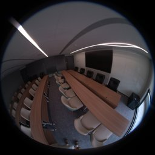
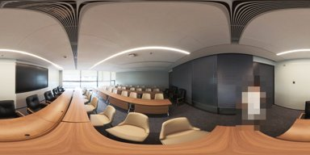
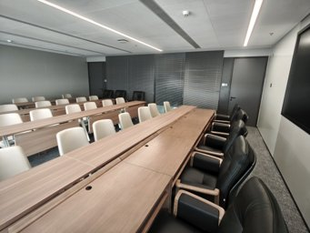

Keep the whole view
Resize every image to a common tensor shape without cropping away its field of view. Carry the source aspect ratio as a conditioning signal.
IMAGES ONLY · ONE FORWARD PASS
Feed-Forward 3D Reconstruction
from Mixed Cameras
Perspective, fisheye and full 360° panoramas.
Different ways of seeing. One shared metric 3D scene.



1 China Mobile Communications Company Limited Research Institute2 The University of Tokyo
arXiv:2609.35658 · 2026
01 / THE IDEA
A full panorama, a fisheye and a phone photo can describe the same space. MEOW reconstructs them together—not as separate camera-specific problems.
From RGB images alone, a single joint forward pass predicts per-view metric pointmaps and camera poses in a shared world. The system builds on MapAnything, learns from synthetic indoor scenes, and transfers zero-shot to real heterogeneous captures. Full panoramas are identified from their pixels; no camera-type labels or calibration are supplied.
02 / THE METHOD
The perspective-pretrained backbone stays.
Data and geometry-aware input handling do the work.
Resize every image to a common tensor shape without cropping away its field of view. Carry the source aspect ratio as a conditioning signal.
Joint attention shares information across all views. Image-only panorama detection selects circular padding for full panoramic views.
Predict rays, depth, camera poses and scale together. Fuse the per-view pointmaps into one scene in a single forward pass.
03 / LENSCOPE
A procedural scene engine provides exact per-pixel rays, metric depth and poses. During training, an online sampler draws mixed camera models and checks the resulting tuple’s covisibility—after the cameras are sampled.
SceneSeeded procedural generation
SupervisionExact rays, depth and poses
TupleCamera-sampled, covisibility-checked
04 / REAL-WORLD RESULTS
Heterogeneous Stanford 2D3DS
Mean over 88 tuples
Laser-scanned mixed-camera benchmark
Mean over 24 four-view tuples
No supplied calibration,
camera-type labels or poses
88 tuples · 3–24 views · metrics computed per tuple, then averaged. ATE after Sim(3) alignment. Higher is better except ATE.
| Method | Camera input | RRA@30 ↑ | RTA@30 ↑ | mAA@30 ↑ | ATE ↓ |
|---|---|---|---|---|---|
| VGGT | None | 32.6 | 47.3 | 10.5 | 1.65 |
| π3 | None | 45.9 | 59.7 | 19.8 | 1.24 |
| MapAnything | None | 52.8 | 53.9 | 16.4 | 1.48 |
| Wid3R | Class per view | 96.9 | 86.5 | 54.3 | 0.83 |
| MEOW ours | None | 95.2 | 96.2 | 80.4 | 0.62 |
24 four-view mixed tuples: panorama + fisheye + two pinholes. Mean over tuples. Acc and Comp in metres after one alignment per tuple.
| Method | Camera input | AUC@30 ↑ | Acc ↓ | Comp ↓ | NC ↑ |
|---|---|---|---|---|---|
| DUSt3R | None | 32.9 | 0.164 | 0.863 | 0.758 |
| MASt3R | None | 31.8 | 0.182 | 0.508 | 0.737 |
| VGGT | None | 19.0 | 0.279 | 0.591 | 0.665 |
| π3 | None | 26.6 | 0.240 | 0.693 | 0.736 |
| MapAnything | None | 24.5 | 0.255 | 0.830 | 0.653 |
| Wid3R | Class per view | 29.3 | 0.199 | 0.467 | 0.764 |
| MEOW ours | None | 79.4 | 0.142 | 0.367 | 0.809 |
Selected mixed-camera results from the released paper and repository. Different metric aggregation rules are not interchangeable. See the paper for single-camera results and the full evaluation scope.
05 / THE LASER BENCHMARK
Twelve registered Leica BLK360 G2 scanner stations provide a real metric reference. Four evaluation tracks cover panoramas, pinholes, fisheyes and mixed cameras, with 24 tuples per track.
The mixed track contains full panoramas and fisheye/pinhole views resampled from the scans. The release includes the data, tuple definitions and evaluation documentation.
Get the benchmark636 MB archive · CC BY 4.0
06 / EXPLORE & BUILD
Try the model. Read the paper. Build with the engine.
For weight access, email li.qiaoge@image.iit.tsukuba.ac.jp with your Hugging Face username, affiliation and intended use, then submit a request on the model page. Trying the online demo does not require downloading the weights.
CITATION
@article{li2026meow,
title = {Many Eyes, One World: Feed-Forward 3D Reconstruction from Mixed Cameras},
author = {Li, Qiaoge and Zhan, Yifan and Yang, Haijun and Liu, Haiyang and Cai, Yiyi and Luo, Chenchi},
journal = {arXiv preprint arXiv:2609.35658},
year = {2026}
}